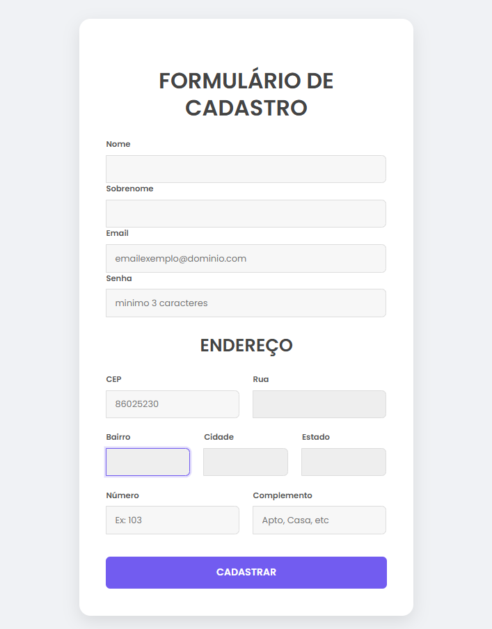
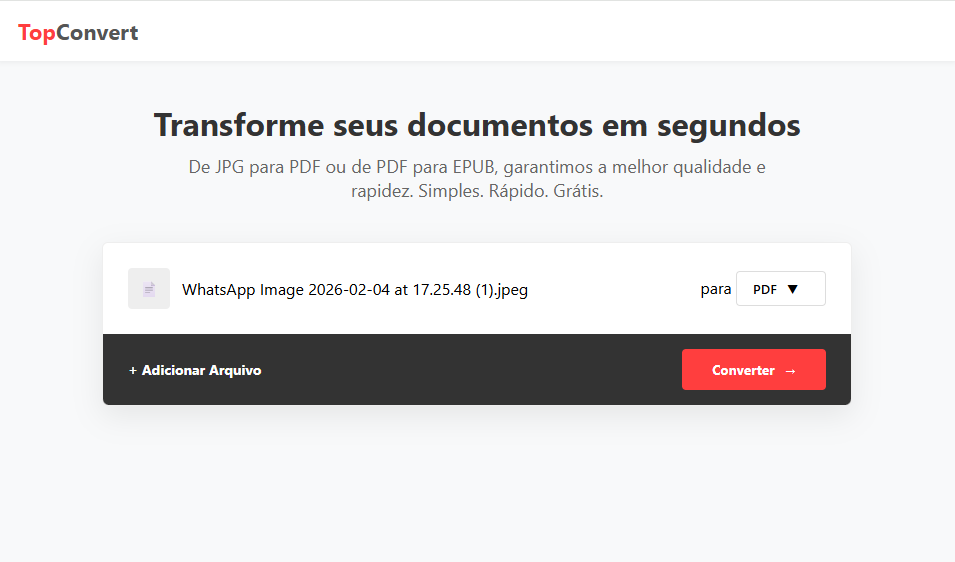
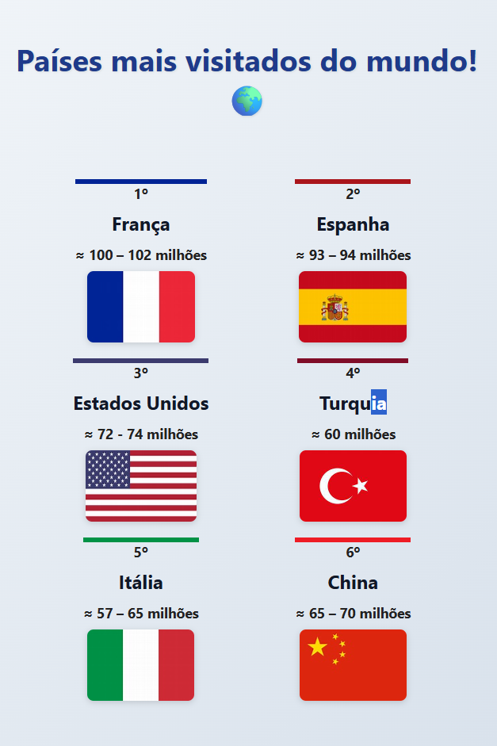

Olá, eu sou a
Larissa Ladeira
Estudante de ADS
Profissional em transição para a área de tecnologia, com foco em banco de dados, desenvolvimento web e boas práticas de codificação.
Meu Contato
Minhas Skills
Formação
2024 - 2026
Anhaguera
Análise e Desenvolvimento de Sistemas
2024 - 2025
Udemy
Lógica de Programação
2021 - 2022
Senac
Pacote Office
2024 - 2025
Curso em Video
MySQL
2025 - 2025
HTML5 e CSS3
Curso em Video
2025 - Atualmente
Curso em Video
JavaScript
Projetos

2025
📋Formulário de Cadastro com API
Projeto construído para treinar o consumo de APIs externas e manipulação de formulários com JavaScript, automatizando a busca de endereços via CEP.
Saiba mais....
Principais Funcionalidades: Consulta Automatizada de CEP: Desenvolvido com JavaScript Assíncrono (Async/Await), o sistema realiza uma requisição para a API ViaCEP assim que o usuário termina de digitar o CEP (evento blur).
Preenchimento Inteligente: Os campos de Rua, Bairro, Cidade e Estado são preenchidos automaticamente com os dados retornados pela API, mantendo esses campos como "somente leitura" para garantir a integridade dos dados oficiais.
Validação de Formulário: Inclui lógica para verificar se os campos obrigatórios estão preenchidos e tratamento de erros para CEPs inválidos ou inexistentes.
Feedback ao Usuário: Após o envio, o sistema exibe uma mensagem de confirmação dinâmica que desaparece automaticamente após 4 segundos.
Tecnologias Utilizadas: HTML5 & CSS3: Estruturação semântica e estilização personalizada com foco em limpeza visual.
Bootstrap 5: Utilizado para garantir o alinhamento responsivo e a base estrutural do layout.
JavaScript (ES6+): Manipulação do DOM e consumo de API REST utilizando fetch.
Google Fonts: Integração da fonte Poppins para um visual moderno e profissional.

2025
🎥 Landing Page: Um Filme Minecraft
Este projeto é uma landing page temática desenvolvida para apresentar informações sobre o lançamento do live-action de Minecraft. O objetivo foi criar uma interface visualmente imersiva, utilizando as cores e a estética do jogo, enquanto aplicava conceitos fundamentais de desenvolvimento web front-end, como semântica HTML5, estilização avançada com CSS3 e responsividade.
Saiba mais....
O projeto foi construído focando em uma estrutura limpa e na experiência do usuário (UX), destacando-se pelos seguintes pontos:
HTML5 Semântico: Utilização de tags como <header>, < nav>, < mai>, < article> e < footer> para garantir uma melhor indexação (SEO) e acessibilidade.
Design Visual Temático: Aplicação de uma paleta de cores baseada em tons de verde esmeralda e marrom, com gradientes lineares (linear-gradient) no cabeçalho e tipografia personalizada via Google Fonts (famílias Sriracha e Nunito Sans).
Responsividade: Implementação de Media Queries para adaptar o menu de navegação e as imagens em telas menores, garantindo que o conteúdo seja legível em dispositivos móveis.
Responsividade: Implementação de Media Queries para adaptar o menu de navegação e as imagens em telas menores, garantindo que o conteúdo seja legível em dispositivos móveis.
Layout Moderno:Uso de Flexbox para centralizar elementos e organizar o sistema de navegação de forma equilibrada.

2026
🔗 Encurtador de Links com API – TinyURL
Aplicação web desenvolvida para gerar URLs curtas em tempo real por meio da integração com uma API externa. O projeto utiliza JavaScript para validação de dados, requisições assíncronas e manipulação do DOM, aliado a um layout moderno com efeitos visuais e design responsivo construído com HTML5 e CSS3.
Saiba mais....
O projeto foi desenvolvido com foco em usabilidade, estética moderna e integração com serviços externos, destacando os seguintes pontos:
Consumo de API Externa: Integração com o serviço TinyURL por meio de requisições HTTP utilizando fetch(), permitindo encurtar links dinamicamente.
Validação de Dados: Verificação da existência da URL antes do envio, além de tratamento de erros para falhas de conexão ou respostas inválidas da API.
Manipulação do DOM: Atualização do campo de entrada com a URL encurtada e seleção automática do texto para facilitar a cópia.
Design Moderno: Interface inspirada em estilos futuristas com glassmorphism, bordas iluminadas, gradientes radiais e sombras suaves, utilizando variáveis CSS para padronização das cores.
Responsividade: Uso de Flexbox e Media Queries para adaptar o layout a diferentes tamanhos de tela, garantindo boa experiência em dispositivos móveis.
Boas Práticas: Organização do código, separação entre estrutura (HTML), estilos (CSS) e lógica (JavaScript), além de foco em acessibilidade visual e clareza na interação.

2026
📄TopConvert – Conversor de Imagens e PDF
Ferramenta utilitária desenvolvida para facilitar a conversão de formatos de imagem (JPG, PNG) para PDF e a extração de textos de documentos PDF para o formato digital EPUB. O foco do projeto foi a manipulação de arquivos no lado do cliente (Client-side) e a integração de bibliotecas externas para processamento de documentos.
Saiba mais....
O projeto foi desenvolvido para oferecer uma solução rápida e segura de conversão de arquivos diretamente no navegador, destacando-se pelos seguintes pontos:
Processamento Client-Side: Utilização das bibliotecas jsPDF e PDF.js para realizar conversões e extrações de texto sem a necessidade de enviar os arquivos para um servidor, garantindo total privacidade ao usuário.
Lógica de Conversão Dinâmica: Implementação de algoritmos em JavaScript para converter imagens em documentos PDF mantendo a proporção original, e um extrator de texto assíncrono para converter páginas de PDF em capítulos de um arquivo EPUB.
Interface Inteligente: Menu dropdown personalizado para seleção de formatos, com troca dinâmica de ícones e estados de botão ("Processando...") para fornecer feedback visual durante as conversões mais pesadas.
UX & Design: Layout limpo e moderno seguindo a paleta de cores institucional, com total responsividade para uso em dispositivos móveis e desktops.
Manipulação de Blobs: Uso de Blob e URL.createObjectURL para gerar links de download instantâneos para os arquivos convertidos pelo sistema.

2026
🌍 Países mais visitados do mundo!
Página web responsiva que exibe os 6 países mais visitados internacionalmente (dados UN Tourism 2024/2025), com layout adaptável via media queries, Flexbox/Grid e efeitos interativos. Desenvolvida para demonstrar conceitos de design responsivo em diferentes dispositivos.
Saiba mais....
O projeto foi desenvolvido para oferecer uma solução rápida e segura de conversão de arquivos diretamente no navegador, destacando-se pelos seguintes pontos:
Responsividade Completa: Uso de media queries para breakpoints em 480px (2 colunas), 768px (3 colunas) e 1260px (6 colunas em linha), garantindo adaptação perfeita em mobile, tablet e desktop.
Layout Flexível e Grid: Container com Flexbox como base (coluna em mobile) e transição para CSS Grid em telas maiores, com centralização e espaçamento uniforme.
Design Visual Atraente: Bordas superiores coloridas inspiradas nas bandeiras de cada país (França azul, Espanha vermelho, etc.), sombras suaves, hover com elevação de card e zoom na imagem da bandeira.
Interatividade: Imagens clicáveis abrem links externos em nova aba (com rel="noopener noreferrer" para segurança), tooltips nos títulos e emoji de globo no título principal.
Boas Práticas: HTML semântico, reset CSS, viewport meta para mobile-first, fontes system-ui para performance e acessibilidade (alt nas imagens corrigidos).
Ferramentas: HTML5 + CSS3 puro (sem frameworks), desenvolvido no Visual Studio Code com extensão Live Server para testes em tempo real.